Вентилятор BORK P800
Вентиляторы были вокруг людей десятилетия. Почему вентилятор был изобретен заново?
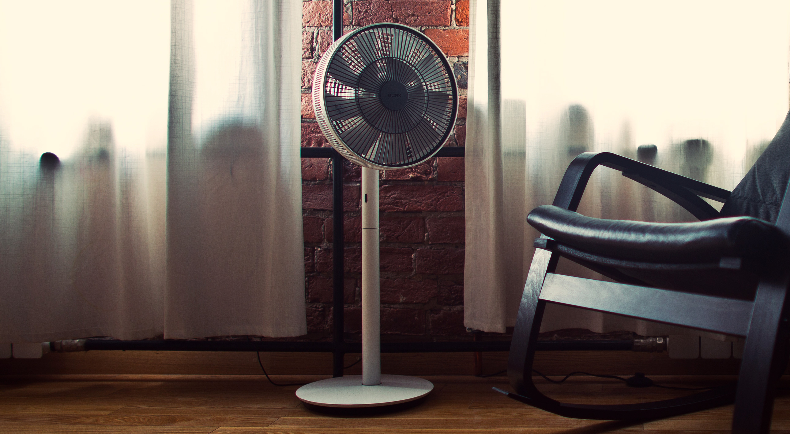Дизайн
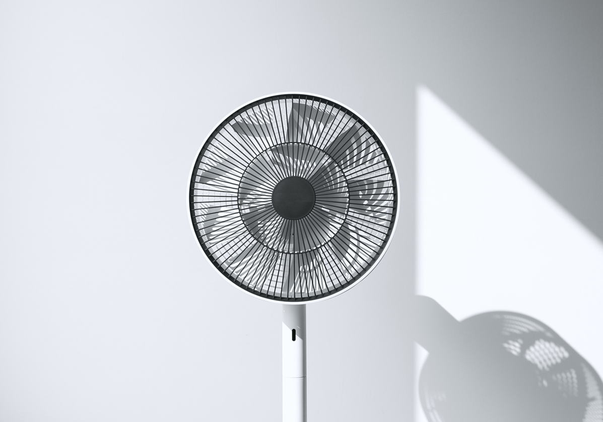Белоснежный корпус, как и остальные детали, выполнен из материалов самого высокого качества. Пластик имеет приятную на ощупь рельефную отделку, препятствующую образованию царапин. Особенностью пластика является его высокая отражающая способность ультрафиолетовых лучей. Это гарантирует выразительную яркость и стойкость цвета в течении долгих лет.
Стильный дизайн вентилятора идеально впишется в современные интерьеры.
Ген Терао: «С момента нашего основания, мы используем философию: взять максимум от минимума. Это означает использование минимального числа деталей. Используем красоту минималистского дизайна. Обеспечиваем наибольшую выгоду при минимальном использовании энергии. Этот подход не достичь путем только одного прилива вдохновения. Это результат многолетних усилий и исследований».
BORK P800 удостоен авторитетными международными наградами в области дизайна.
Дуновение или ветер
Дуновение ветра летним днем мы воспринимаем с радостью. Ветер же в доме все воспринимают как сквозняк. Поток воздуха от вентилятора, направленный в лицо, вряд ли можно долго переносить.
Классические вентиляторы
Многие классические вентиляторы создают концентрированный воздушный поток. Расстояние воздушного потока у них невысоко, даже на высоких скоростях. При этом они достаточно шумны.
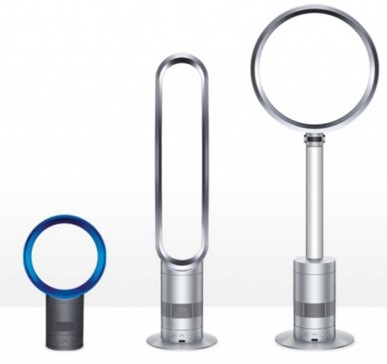Многие классические вентиляторы создают концентрированный воздушный поток. Расстояние воздушного потока у них невысоко, даже на высоких скоростях. При этом они достаточно шумны.
Технология GREENFAN
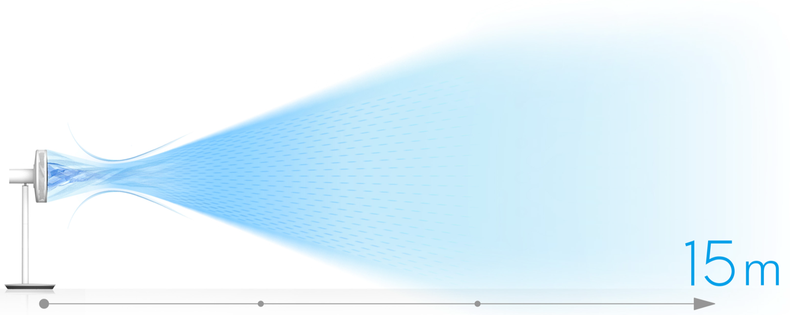Вентилятор BORK P800 имеет рассеянный воздушный поток, создавая циркуляцию воздуха в помещении, подобно дуновению ветра в природе. Расстояние воздушного потока при этом достигает 15 метров. На минимальной скорости шума совсем нет, и вы ощущаете легкий бриз.
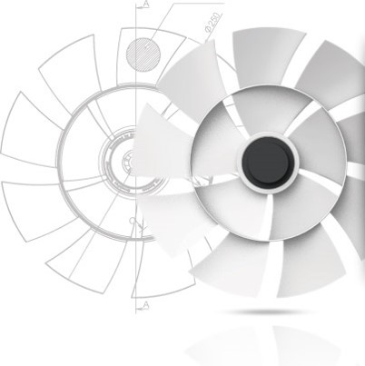GreenFan – это эксклюзивная технология, запатентованная в Японии и имеющая международный патент. За счет особой конструкции лопастей от одного вентилятора генерируется два потока воздуха с различными скоростями. Лопасти были разработаны так, чтобы два типа воздушного потока циркулировали вместе и далее концентрировались в одной точке.
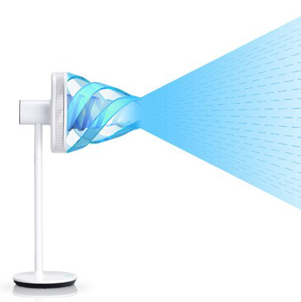Далее образуется единый мощный и широкий воздушный поток. Эта технология позволила перемещать больше воздуха до 15 метров без увеличения размера лопастей. При этом рассеянный воздушный поток создается при любых оборотах двигателя.
Уровень тишины
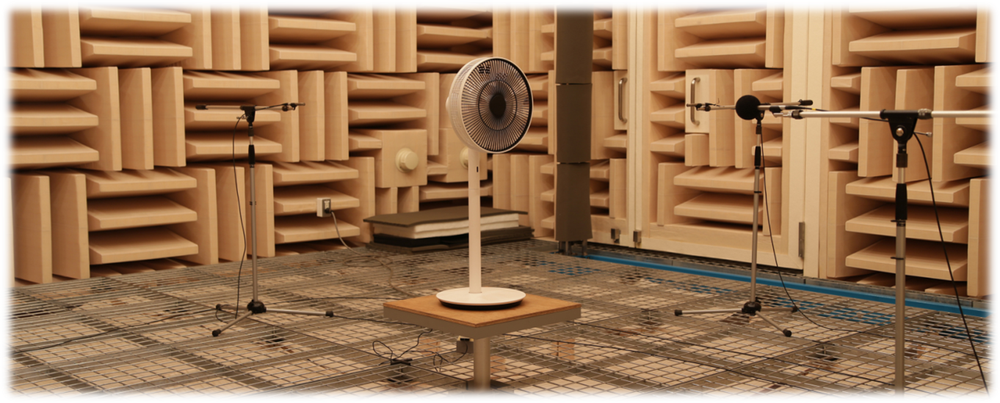Было уделено внимание аэродинамическим показателям, повышающим комфорт. И это при минимальном уровне «шума» всего в 13 дБ.
Но это ещё не всё.
Энергоэффективность
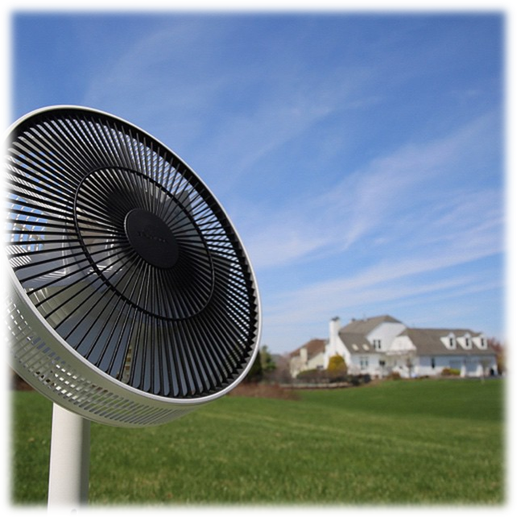Технология GreenFan позволяет добиться максимальной эффективности обдува при рекордно низких энергозатратах:
- Мin - 1,5 Вт
- Мах - 20 Вт
Достигнуть таких высоких характеристик призван высокотехнологичный электродвигатель вентилятора BORK P800.
BLDC электродвигатель от компании Minebea Co.
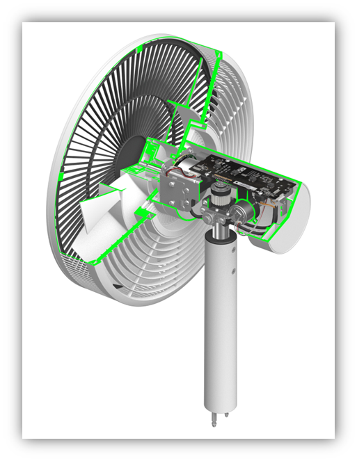Высокотехнологичный BLDC двигатель. Бесщеточный двигатель постоянного тока. Популярное название – ЦИФРОВОЙ. Отсутствие щеточно-коллекторного узла позволяет получить: высокие показатели КПД, увеличенную надежность и долговечность, меньший нагрев, отсутствие искрения и помех. Применение таких двигателей имеет широкий спектр, от компьютерных вентиляторов и CD/DVD-приводов до роботов и космических ракет, от бытового до индустриального оборудования. Электродвигатель BORK P800 оснащен датчиком оборотов, что позволяет точно поддерживать установленную скорость вращения лопастей и поворота.
Minebea Co., Ltd.или NMB (Nippon Miniature Bearing) - межнациональный концерн, основан в Токио в 1951 году. На сегодняшний день насчитывается более 50000 сотрудников компании в 70 регионах и более 30 производственных площадок в Японии, Мексике, Бразилии, Сингапуре, Тайване, Таиланде, США, Китае и Европе.
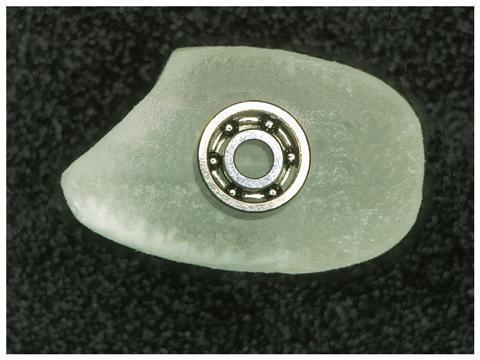Minebea выпустила самый миниатюрный подшипник (на фото выше он расположен на рисовом зерне) в мире с внешним диаметром всего 1,5 мм, внутренним – 0,50 мм и шириной – 0,65 мм.
Контакты MOLEX
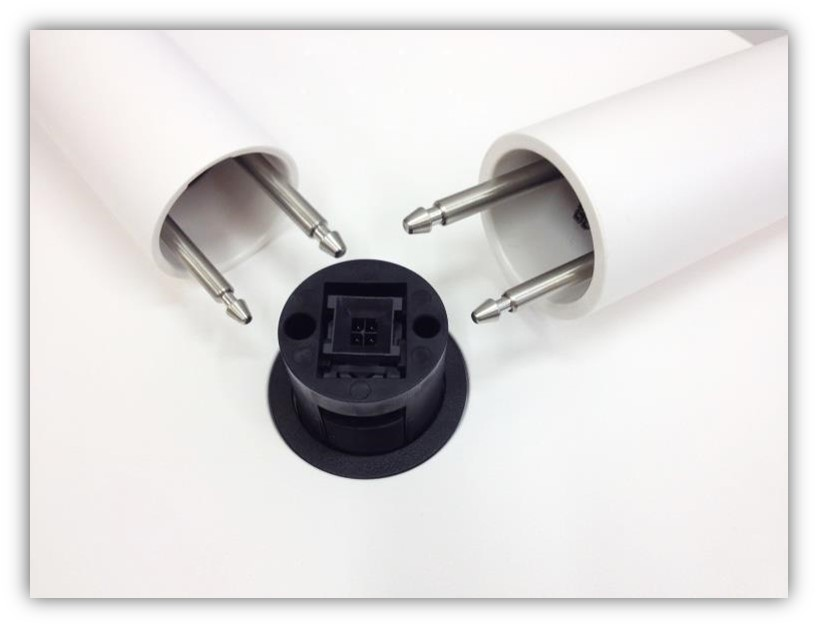При производстве вентилятора BORK P800 используются самые надежные компоненты. Все электрические контакты, и которые видно, и те что внутри, произведены авторитетной корпорацией Molex.
Molex Incorporated - мировой лидер по производству электронных, электрических и волоконно-оптических компонентов. Компания была основана в 1938 году в США, на сегодняшний день имеет 39 заводов и фабрик, расположенных в 16 странах мира.
И это следует учитывать, потому что вентилятор BORK P800 имеет возможность…
2 варианта использования
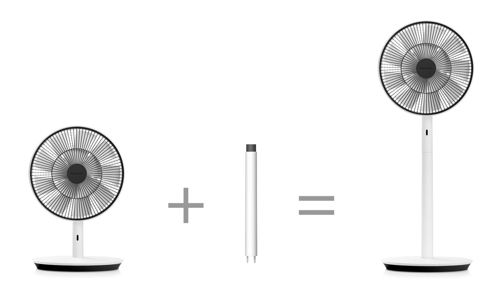Сделать из настольного вентилятора напольный, и обратно, так же просто, как 1 2 3. При этом и настольный компактный вариант может размещаться на полу. Высота при настольном варианте 47 см.
Управление индикация и пульт ДУ
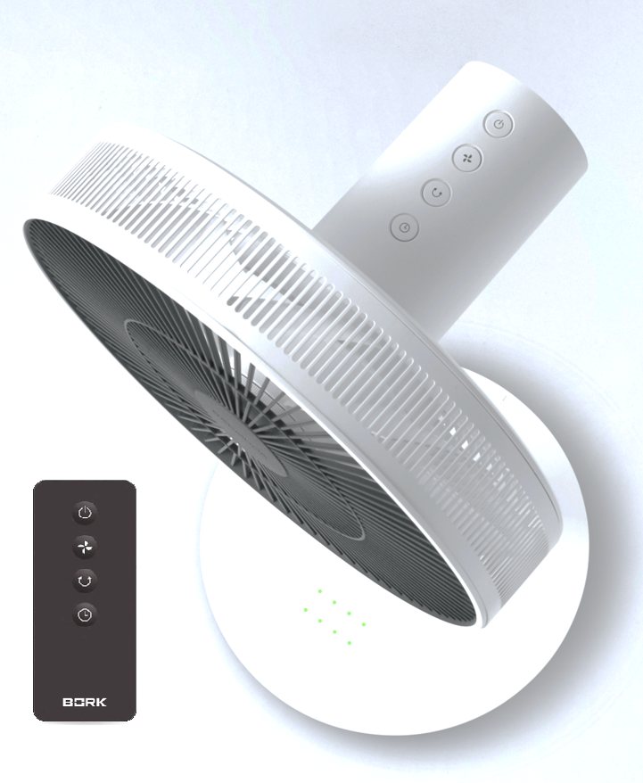Почему управление находится именно в этом месте? Да, теперь никому не придется нагибаться! И для малыша высоковато. Батарейка дли пульта ДУ CR2025 входит в комплектацию.
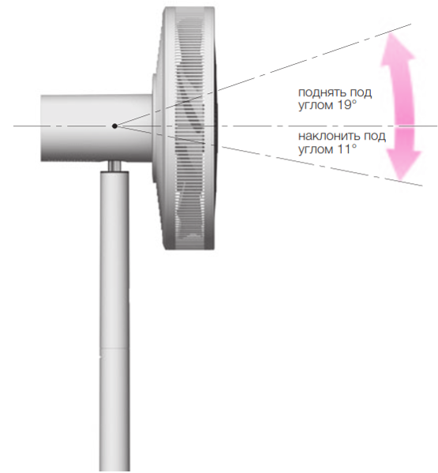Угол наклона вентилятора регулируется вручную.
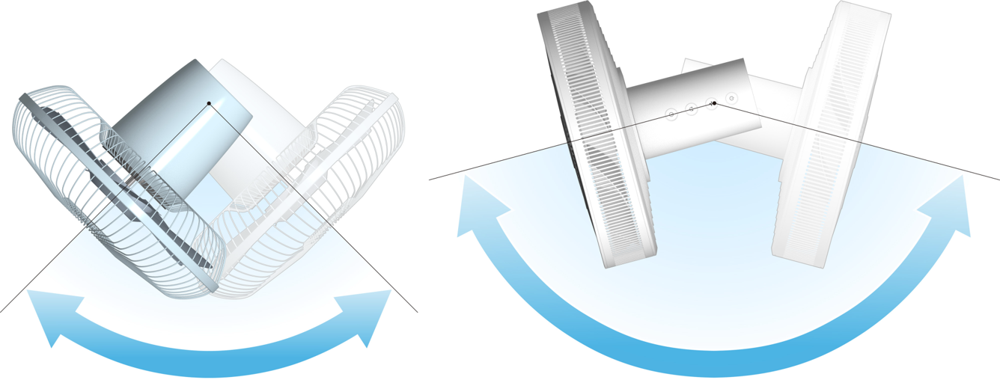Вентилятор BORK P800 имеет максимальный угол поворота 150 градусов в режиме «авто» поворота. Больше из всех существующих вентиляторов на рынке. При этом угол поворота можно отрегулировать от 30 градусов, в любом направлении.
Удобный адаптер
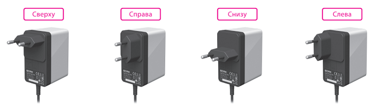Адаптер сетевого питания BORK может быть установлен в 4 различных положениях, в зависимости от конфигурации розетки.
Беспроводное исполнение
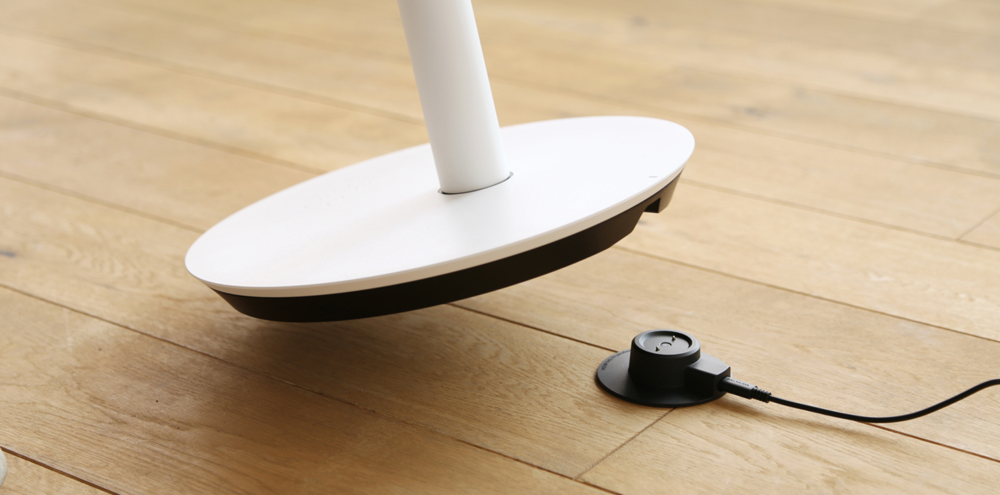С помощью аккумулятора вентилятор BORK P800 может работать без проводов. Аккумулятор с док-станцией BORK BD1 приобретается отдельно. До 20 часов в беспроводном режиме при выборе 1 – ой скорости. Когда уровень заряда станет низким 3 раза прозвучит звуковой сигнал.
Аргументы для продажи
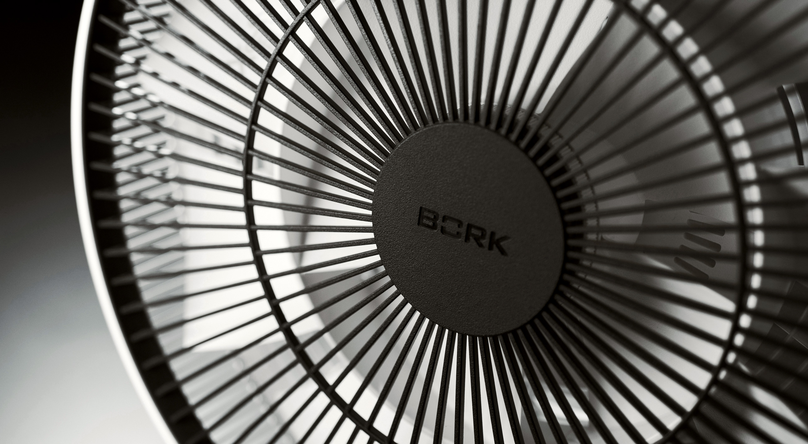- Произведен в Японии
- Исключительный дизайн от Ген Терао
- Широкий воздушный поток
- Воздушный удар до 15 метров
- Рекордный угол поворота
- Напольное или настольное использование
- BLDC цифровой двигатель
- Низкое энергопотребление
- Низкий уровень шума
- Компактные габариты
- Системы безопасности
- ПДУ
- Изменения положения адаптера
- Возможность беспроводного использования
Технические характеристики
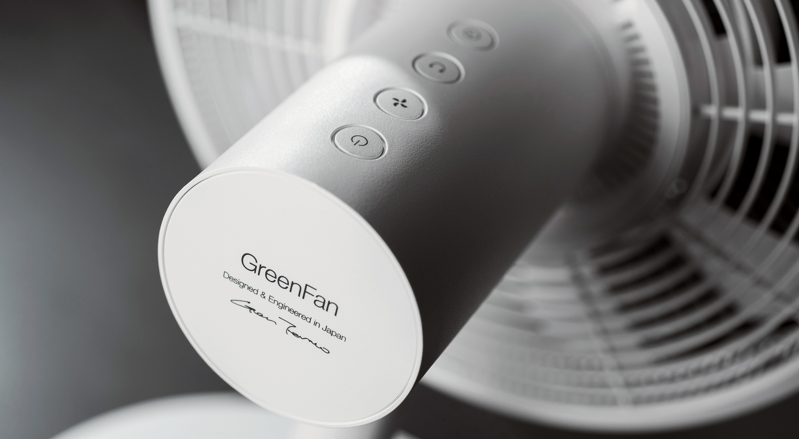
Автовольтаж: 100 – 240 В
Мощность: 1,5 – 20 Вт
Количество скоростей: 4
Скорость потока: 228 метр/мин
Количество оборотов:
Мin 250 об/мин
Mах 775 об/мин
Таймер отключения: 1 – 4 часа
Угол поворота: 30 - 150 градусов
Габариты (ВхШхГ): 87/50 × 33 × 32 см
Вес: 4,1
Страна производитель: Япония
Номинальное напряжение на входе:
AC 100–240В
Частота: 50/60 Гц
Номинальное выходное
напряжение: DC 12 В
Сила тока: 3 A
Номинальная мощность: 73–93 В
Длина шнура: 1,8 м
Тип: Литиевая батарея с полимерным электролитом
Емкость: 4500 мАч, 7,4 В (33,3 Вт-ч)
Время зарядки: около 8 часов
Рабочая температура: 10 - 35⁰С
Кол-во циклов заряда: прибл. 500 раз
(в зависимости от режима использования)
Вес: 270 гр
Страна производитель: Китай